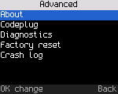
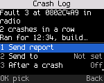
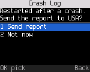

设置
用 OK、7，或 *、0 打开设置。设置按用途分组。数字键直接打开某个分组。查找也能按名称找到每项设置：在主屏幕输入其开头字母。


更改设置
每行显示当前值。
- 开关和列表设置用 OK 更改：每按一次切换到下一个值。
- 数字设置在按 OK 时打开编辑器。用 上 和 下（或信道旋钮）更改数值，或用数字键输入，按 OK 保留，按 返回 保持不变。输入超出范围或位于步进之间的值不会被接受：电台显示“未更改”及范围。
- 设置一更改就生效并保存，没有单独的保存步骤。

有些设置在其背后的功能存在之前就在菜单中，或对本电台不适用。它们会变暗。在变暗的行上按 OK 会说明原因。各表的状态列表示：
| 状态 | 含义 |
|---|---|
| 有效 | 立即生效，并在关机后保留 |
| 有效，不保留 | 立即生效，关机后恢复默认 |
| 变暗 | 尚未构建，或本电台没有。按 OK 说明原因 |
参考
声音（按键 1）
| 设置 | 取值 | 默认 | 作用 | 状态 |
|---|---|---|---|---|
| 按键音 | 开、关 | 开 | 每次按键时短促提示音 | 有效 |
| 音量 | 0 到 16 | 8 | 扬声器音量，仅用于没有音量旋钮的电台（其他电台不显示该行）。0 为静音。音量键打开一个可更快调节的屏幕（电台参考） | 有效 |
| 提示音音量 | 0 到 10 | 5 | 电台提示音的最大音量。提示音跟随扬声器音量，直到此级别，因此调低音量也会使其变轻 | 有效 |
| 允许发射提示音 | 开、关 | 开 | DMR 发射开始时的提示音（DMR） | 有效 |
| 语音提示 | 开、关 | 关 | 语音播报。尚无录制语音 | 变暗 |
| 消息提示音 | 开、关 | 开 | 收到文本消息时的三音提示 | 有效 |
| 振动 | 开、关 | 开 | 收到文本消息、呼叫提示、发给你的私密呼叫以及听到紧急时振动。仅用于有振动马达的电台（电台参考） | 有效 |
显示（按键 2）
| 设置 | 取值 | 默认 | 作用 | 状态 |
|---|---|---|---|---|
| 亮度 | 10% 到 100%，步进 10 | 100% | 背光亮度。快速设置中也有，磁贴 9 | 有效 |
| 背光变暗/关闭 | 5s/20s、10s/40s、30s/2m、1m/4m、2m/8m、从不 | 30s/2m | 无按键时，背光在第一个时间后变暗到五分之一，第二个时间后关闭 | 有效 |
| 主题 | 深色、浅色、高对比度 | 深色 | 屏幕配色。单色屏电台没有 | 有效 |
| 高亮色 | 默认、红、橙、黄、青、浅蓝、紫、粉 | 默认 | 选中行或磁贴以及主屏幕信道编号的颜色。单色屏电台没有 | 有效 |
| 状态栏填充 | 开、关 | 开 | 用高亮色填充顶部状态行（默认为浅灰，高对比度主题为白色），文字画成黑色。单色屏电台没有 | 有效 |
| 大字体 | 开、关 | 关 | 主屏幕只显示状态行、信道和通话目标，且为大号 | 有效 |
| 提示行 | 开、关 | 开 | 带按键提示的底行 | 有效 |
| 语言 | English、Español、Italiano | English，或网页安装器中选择的电台语言 | 菜单和消息的语言。恢复出厂设置会回到该默认值。列表显示 RadioFoundry 的所有语言；固件中没有的语言会变暗。用网页刷机安装时选择它即可获得（安装）。名称、呼号和标准电台缩写（TG、CC、VFO）保持不变 | 有效 |
通话与收听（按键 3）
| 设置 | 取值 | 默认 | 作用 | 状态 |
|---|---|---|---|---|
| 回复窗口 | 0 到 30 秒 | 电台频率的挂机时间，否则 10 秒 | PTT 应答最近呼叫的时长（DMR）。0 表示关闭 | 有效 |
| 发射超时 | 关、30 秒、1、2、3、5、10 分钟 | 3 分钟 | 最长发射时间，用于电台频率中没有自己超时的信道 | 有效 |
| 默认静噪 | 0 到 9 | 5 | 信道未设置时的 FM 静噪级别 | 有效 |
| VFO 步进 | 自动、2.5、5、6.25、8.33、10、12.5、20、25、50、100 kHz | 自动 | VFO 中上、下和旋钮的步进。自动在带宽 25K 和 AM 中为 25 kHz，否则 12.5 kHz。仅用于有 VFO 的电台 | 有效 |
| 调频广播步进 | 200 kHz、100 kHz | 200 kHz | 广播频段中的 VFO 步进。200 kHz 落在奇数十分位（88.1、88.3），即美洲的电台位置。仍可输入任何频率。仅用于有广播接收机的电台（航空波段与调频广播） | 有效 |
| 麦克风增益 | 0 到 10 | 5 | 麦克风电平，每步 2 dB。5 为电台正常电平。设置 DMR，以及在麦克风路径中设置电平的电台的 FM（电台参考）。更改从下次发射起生效。麦克风 AGC 开启时显示“AGC”且不可更改 | 有效（DMR）；FM 未在空中验证 |
| 麦克风 AGC | 开、关 | 关 | 在 DMR 上均衡你的电平：轻声提高、大声降低，因此无需设置麦克风增益。开启期间麦克风增益保持 5。语音编解码器不支持的电台此项变暗 | 需要空中验证（DMR） |
| 麦克风降噪 | 开、关 | 开 | 减少你在 DMR 上发送内容中的稳定背景噪声（风扇、发动机、风），词间也有效。若想保留的稳定声音被切掉，请关闭。语音编解码器不支持的电台此项变暗 | 需要空中验证（DMR） |
| 默认数字监听 | 开、关 | 关 | 每次选择 DMR 信道时开启数字监听（DMR：所有通话组，混杂模式）。在主屏幕按 返回 会关闭它，直到下一个信道 | 有效 |
| 显示主叫别名 | 开、关 | 开 | 在呼叫者 ID 下显示收到的通话者别名（名称） | 有效 |
| 双守候回话 | 开、关 | 关 | 关：另一信道上的呼叫绝不移动 PTT。开：另一信道上的呼叫结束时，该信道成为选中信道 10 秒（每次回复和该处的呼叫重新计时），因此 PTT 在那里应答（双守候） | 有效 |
| 双守候延时 | 0.5、1、1.5、2、3、5 秒 | 1 秒 | 呼叫结束后双守候在信道上停留多久以等待回复。期间它查看另一信道并在那里显示忙（双守候） | 有效 |
| SFR 接收 | 中继、首个副本、双路接收 | 中继 | 实验性。单频中继用户播放什么（独立 SFR）。中继：只播放中继台的副本。首个副本：通话者或中继台的副本，以先到者为准。双路接收：两份都用，每个损坏的语音帧取自另一份。不含该功能的构建缺少双路接收 | 有效（中继）。首个副本和双路接收取决于电台：有些一次只能听到一份副本（电台参考） |
| SFR CW 标识 | 关、5、10、15、30 分钟 | 关 | 实验性。单频中继信道多久以摩尔斯码发送一次呼号（独立 SFR）。呼号是电台名的第一个词（空格、- 或 / 之前），且必须像呼号：4 到 7 个字母和数字，两者至少各一个。否则不发送。中继台承载过通话并安静 2 秒后，标识以 FM 在信道上发出，每个间隔最多一次。不含该功能的构建缺少此项 |
有效 |
加密（按键 4）
| 设置 | 取值 | 默认 | 作用 | 状态 |
|---|---|---|---|---|
| 密钥类型 | 关、Motorola、Anytone | 关 | 基础加密密钥的种类（DMR）。关会移除密钥 | 有效 |
| 密钥 | Motorola 1 到 255，Anytone 0 到 65535 | 密钥值，用数字键输入。选择类型前变暗 | 有效 | |
| 自动锁键 | 关、30 秒、1 分钟、5 分钟 | 关 | 一段时间无按键后锁定按键 | 有效 |
| 锁定时 PTT | 开、关 | 开 | 按键锁定时 PTT 是否可用。关：解锁前 PTT 无效 | 有效 |
位置（按键 5）
| 设置 | 取值 | 默认 | 作用 | 状态 |
|---|---|---|---|---|
| GPS | 开、关 | 开 | GPS 接收机，用于有该模块的电台（电台参考）。关闭会切断模块电源，电台无定位（APRS 和 DMR 使用电脑或固定位置）；更改立即生效。没有 GPS 时该行变暗并显示“本电台无 GPS” | 无 GPS 时变暗 |
| 位置格式 | 度、度分秒、网格 | 度 | 位置的显示方式 | 无 GPS 时变暗 |
| 发送位置 | 关、1 分钟、5 分钟、15 分钟 | 关 | 按此间隔发送你的位置 | 无 GPS 时变暗 |
| 应答 GPS 请求 | 开、关 | 开 | 应答 LRRP 位置请求（查找也能以“position”找到）。没有 GPS 时回答“无定位” | 有效 |
连接（按键 6）
| 设置 | 取值 | 默认 | 作用 | 状态 |
|---|---|---|---|---|
| 允许热点 | 开、关 | 开 | 允许 USB 上的热点主机把电台置于热点模式（热点） | 有效 |
| 应答电台检查 | 开、关 | 开 | 应答其他电台的电台检查（电台检查） | 有效 |
| 应答呼叫提示 | 开、关 | 开 | 确认呼叫提示，使呼叫者知道寻呼已到达 | 有效 |
| TFTP 写入电台频率 | 开、关 | 开 | 允许电脑在 USB 网络模式下经 TFTP 写入电台频率（USB 网络）。读取始终可用 | 有效 |
| 消息格式 | ETSI、ETSI 短、Motorola | ETSI | 你发送的文本消息格式（消息）。任何格式的消息都能接收 | 有效 |
| 接受区域共享 | 开、关 | 开 | 开：显示其他电台发来的区域或信道，供导入或拒绝（共享区域）。关：忽略 | 有效 |
| 启动时 USB 网络 | 开、关 | 关 | 电台以 USB 网卡而不是串口启动（USB 网络） | 有效 |
| PC 应答数据 | 开、关 | 关 | 控制站模式：电脑在 USB 网络模式下连接时，由它应答发往电台的数据，而不是电台（USB 网络） | 有效 |
| USB 地址 | 按 DMR ID、192.168.10.x | 按 DMR ID | USB 网络链路的地址：由你的 DMR ID 得出，或固定的一对 192.168.10.1（电台）和 192.168.10.2（电脑） | 有效 |
电源（按键 7）
| 设置 | 取值 | 默认 | 作用 | 状态 |
|---|---|---|---|---|
| 省电 | 开、关 | 关 | 空闲 FM 信道上接收机在短暂收听窗口之间休眠（电池与供电） | 有效 |
| 自动关机 | 关、30 分钟、1 小时、2 小时 | 关 | 一段时间未使用后关机（电池与供电） | 有效 |
| 低电量提示 | 5% 到 30%，步进 5 | 15% | 电量降到该级别时提示（电池与供电） | 有效 |
按键（按键 8）
| 设置 | 取值 | 默认 | 作用 | 状态 |
|---|---|---|---|---|
| 长按时间 | 400 到 1200 ms，步进 100 | 600 ms | 长按需要按住多久 | 有效 |
| 按键重复 | 60 到 300 ms，步进 20 | 120 ms | 按住 上 和 下 时的重复速率 | 有效 |
| 主页上下键 | 信道、区域、通话目标 | 信道 | 主屏幕上 上 和 下 更改什么。通话目标在 DMR 信道上在信道联系人和收听列表间步进。FM 信道上它们切换信道 | 有效 |
| 每个键一行，名称与电台一致（SK1、SK2……） | 默认、无、监听、通话目标、功率级别、下一区域、上一区域、扫描、按键锁、主区域、复制到 VFO、回拨 | 默认 | 短按该键的作用。默认值见按键角色。监听在 FM 上按住时打开静噪，在 DMR 上开或关数字监听。按键锁锁定和解锁按键。回拨与最后听到的呼叫通话。主区域转到电台频率的第一个区域：请在 CPS 中把常用区域放在最前。复制到 VFO 把信道复制到 VFO 并打开（VFO）；已在 VFO 中时显示“已在 VFO 中”。有 VFO 的电台才提供该项 | 有效 |
| 键名加“长按”（SK1 长按……） | 默认、无、通话目标、功率级别、下一区域、上一区域、扫描、紧急、按键锁、主区域、复制到 VFO、回拨 | 默认 | 长按该键的作用。紧急需要按住 1.5 秒。短按为监听时，长按在 DMR 信道上生效；FM 上按住该键会保持静噪打开（要持续打开静噪，请用 *、5） | 有效 |
菜单不需要的每个键都有一对行；电台的列表说明是哪些。按键设置也在电台频率中，因此写入电台的电台频率可以设置它们，而此处的更改也会写入电台频率。
我的电台（按键 9）
| 设置 | 作用 |
|---|---|
| DMR ID 和名称 | 先显示电台型号，然后是你的 DMR ID、电台名和两行启动文字，均按电台频率中的存储显示。在 DMR ID 上用数字键输入新 ID（最大 16776415；更大的 ID 预留给网络）并按 OK：电台会写入电台频率并立即使用，电台频率编辑器或 qdmr 下次读取时可见。返回 收回最后一位，全部收回后 ID 保持不变。在电台名、启动 1 或 启动 2 上，OK 打开文本输入（文本输入）；其中的 OK 保存，最多 16 个字符 |
| 关于 | 固件版本、其日期和电台型号：与设置 > 高级 > 关于相同（见下文） |
高级（按键 0）
| 项目 | 作用 |
|---|---|
| 关于 | 每行一项：固件（“RadioFoundry”）、发行版（发行版名称，例如 v26.11；发行版之间的构建不显示）、构建（构建所用的提交）、日期（提交日期；有本地更改的构建则为构建日期）和电台（电台型号）。然后是 RadioFoundry 的许可证（MIT）、维护者及贡献者名单的位置，以及其他各部分的许可证：第三方库和 AMBE+2 编解码器。编解码器显示为“原厂”：它来自你电台自己的固件，不属于 RadioFoundry。该页面为小字文本，不截断任何内容，也没有状态栏。通话期间状态栏会回来。上、下 或旋钮可滚动超过一屏的页面 |
| 电台频率 | 信道来源（内置或来自 CPS）、区域数和信道数 |
| 诊断 | 诊断页面（也是 OK、6、7） |
| 恢复出厂设置 | 把所有设置恢复默认（见下） |
| 崩溃日志 | 上次崩溃留下的记录，以及发送给开发者（见下） |
| 频率微调 | 同时移动电台的收发频率，用于频率偏移的电台。测量误差（频率计、服务监视器或热点的 BER 测试），并以相反符号输入。页面显示该微调在 440 MHz 和 144 MHz 下折算的 Hz：在 440 MHz 偏高 2 kHz 的电台约需 -4.5 ppm（-1980 Hz）。页面用大号字显示微调量，下面是 -10 到 +10 的滑块，显示屏有空间时其下显示“+ 为提高频率”。上、下（或旋钮）步进 0.1 ppm，# 切换符号，数字键输入（# 4 5 OK 为 -4.5 ppm）。停止更改后生效。仅用于支持该功能的电台（哪些电台）。范围 -10.0 到 +10.0 ppm，步进 0.1 ppm，默认 0 |


恢复出厂设置
设置 > 高级 > 恢复出厂设置会询问“将所有设置恢复为出厂默认？信道保留。此操作无法撤销。”焦点从“不，保留设置”开始。聚焦“是，重置”并按 OK。

重置会把每项设置恢复默认（亮度、电台设置、加密密钥、信道位置），擦除 RadioFoundry 自己的数据区，并重启电台。电台频率和校准保留。
崩溃日志
固件崩溃时，电台会保留一份简短记录，说明发生位置和原因，然后重启。停止响应约 3 秒的电台也算崩溃：记录显示“挂起”。设置 > 高级 > 崩溃日志显示该记录：发生了什么、连续崩溃次数、电台运行了多久以及固件构建。没有记录时显示“无崩溃记录。”关机可能会丢失记录：请先查看再关机。

高级 > 崩溃日志">| 项目 | 作用 |
|---|---|
| 发送报告 | 在当前信道上经 DMR 把记录发送到“发送至”联系人。空中需要几秒；随后显示“崩溃报告已发送”或“崩溃报告未发送” |
| 发送至 | 报告发往的联系人，私密或组呼：从联系人中选择（输入以查找） |
| 崩溃后 | 关：重启时什么都不做。询问：电台询问是否发送报告。自动：不询问直接发送。默认关 |
| 清除 | 忘记该记录 |

崩溃后为“询问”时，电台在重启后询问一次：

询问和自动需要“发送至”联系人，以及电台可发射的 DMR 信道。报告最多约 150 字节，不含音频、消息或位置：只有崩溃记录和固件构建。空中没有任何内容确认它已到达。
没有菜单的设置
电台中有一些设置尚未出现在菜单中：
- 忙信道锁定和 roger beep；
- 扫描的恢复模式和时序；
- VOX 灵敏度；
- ARS 服务器和紧急设置；
- IP 数据设置（头压缩、确认数据）和 SNMP 团体名；
- 漫游阈值、迟滞和定期搜索；
- SFR 空闲信标。
开发者通过调试链路更改它们（tools/rfoundry_debug.py radio set ...、data settings ...、data ip-settings ...、snmp ...）。电台会保留它们。漫游测量和信标设置在工具 > 漫游中（DMR）。
没有设置菜单的构建（CONFIG_UI_SETTINGS=n）改为显示“请用 qdmr 设置”，并保留已存值。